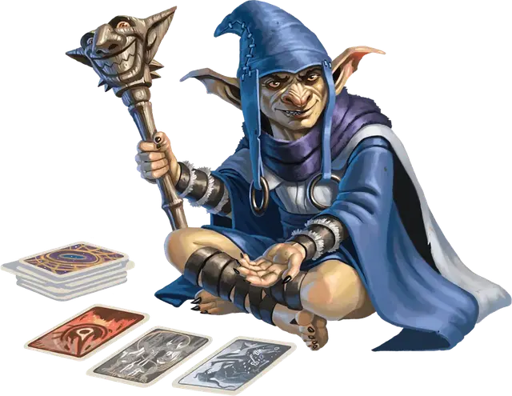

Оддлвин
Oddlewin
Маленькая Фея (Гоблиноид), хаотично-нейтральная, именной НИП

Класс Доспеха 13 (кожаный доспех)
Хиты 21 (6к6)
Скорость 30 футов
| мод | спас | ||
|---|---|---|---|
| СИЛ | 8 | −1 | −1 |
| ЛОВ | 14 | +2 | +2 |
| ТЕЛ | 10 | +0 | +0 |
| мод | спас | ||
|---|---|---|---|
| ИНТ | 10 | +0 | +0 |
| МДР | 16 | +3 | +3 |
| ХАР | 15 | +2 | +2 |
Навыки Выступление +4, Скрытность +6
Иммунитет к состояниям очарование
Чувства тёмное зрение 60 футов, пассивное Восприятие 13
Языки Общий, Гоблинский, Сильван
Опасность 2 (450 опыта)
Бонус мастерства +2
Среда обитания Лес, Подземье, Холмы
Особенности
Нилбогизм. . Любое существо, которое пытается нанести урон Оддлвину, должно сначала преуспеть в спасброске Харизмы Сл 12 или стать очарованным до конца своего следующего хода. Очарованное таким образом существо должно использовать свое действие на восхваление Оддлвина.
Оддлвин не может восстановить хиты, даже посредством магического лечения, кроме как своей реакцией Переворот удачи.
Предсказатель. Оддлвин может накладывать заклинание гадание [augury] в виде ритуала, используя карты в качестве материального компонента.
Действия
Скипетр шута. . Рукопашная атака оружием: +4 к попаданию, досягаемость 5 футов, одна цель. Попадание: 5 (1к6 + 2) дробящего урона.
Облако из карт. Оддлвин вызывает волшебные карты, которые рассекают воздух в 5-футовом кубе в пределах 60 футов от Оддлвина до начала следующего хода Оддлвина. Существо, начинающее свой ход в кубе или впервые входящее в эту область в свой ход, получает 10 (4к4) рубящего урона.
Использование заклинаний. Оддлвин накладывает одно из следующих заклинаний, используя Харизму в качестве базовой характеристики (Сл спасброска от заклинаний 12):
• Неограниченно: волшебная рука [mage hand], жуткий смех Таши [Tasha’s hideous laughter].
Бонусные действия
Ловкий побег. Оддлвин может в каждом своём ходу совершить действие Отход или Засада.
Реакции
Переворот удачи. . В ответ на нанесение урона Оддлвину другим существом, Оддлвин уменьшает урон до 0 и восстанавливает 9 (2к8) хитов.
Описание
Оддлвин - нилбог [nilbog], гоблин, одержимый духом-обманщиком